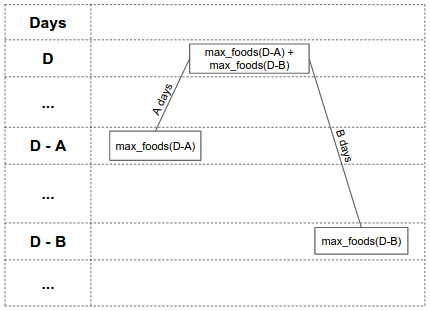
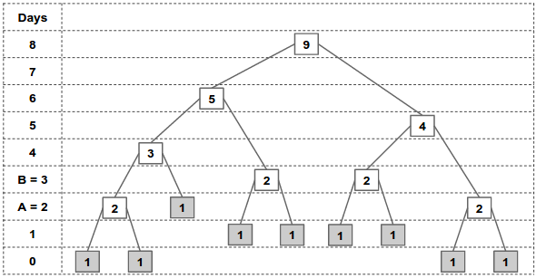
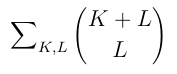
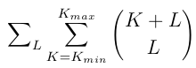
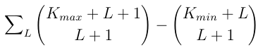

We describe two solution strategies. First a dynamic programming solution, then a more direct combinatorial solution.
At a glance, this sounds like a standard dynamic programming problem where we compute the minimum number of days needed to identify the bad food among the N foods. We can split the N foods into two groups, perform an experiment on one of the groups (i.e., eat all the foods in the first group) and wait for the outcome. If Kelly gets an allergic reaction, then the bad food is in the first group, otherwise it’s in the second group. The number of days needed then depends on the number of days it takes to solve each of the smaller sets.
We can try all possible split sizes for the first group, which gives an O(N^2) solution. We can improve this to O(N) by noticing that the optimal split size for N is always at least as large as the optimal split size for N-1. So we only need to consider split sizes starting at the previous split size, and in total only O(N) split positions are considered. Looking at the constraints for the small input, where N can be as large as 10^15, it is obvious that this is not the way to go. However, this approach may give some insight on how to improve the solution (as we shall see in the next section).
You may wonder why splitting the N foods equally and performing experiments on one of the groups does not give an optimal answer. Consider an example where A = 1, B = 100, and N = 4. In this case, the cost of having an allergic reaction is very high. It is better to perform an experiment one food at a time because as soon as Kelly eats the bad food, she will know about it the next day and thus the whole process only takes at most 3 days. But if she splits into two groups of size 2 and performs an experiment on one of the groups, she risks getting an allergic reaction and still being unable to identify the bad food and will have to wait 100 days for the next experiment. Therefore splitting the N foods equally may not lead to an optimal solution.
After playing around with some small cases where A and B are at most 100, you will discover that the minimum number of days needed is only in the range of thousands, even for large N. This gives a hint that using the number of days as the DP state could be much more efficient. We can use DP to compute max_foods(D), the maximum number of foods for which Kelly can identify the bad food using at most D days. If we can compute max_foods(D) quickly, we can compute the final answer by finding the smallest X where max_foods(X) >= N.
To compute max_foods(D), we are going to construct a full binary tree that represents a strategy that handles the largest possible number of foods in at most D time. Each node in the tree corresponds to a set of foods. Kelly starts at the root node, and performs a series of tests. Each test narrows down the set of foods, and she moves to the node corresponding to that set. To do this, she eats all the foods in the right child of the current node. If she does not get a reaction, she moves to the left child. If she does get a reaction, she moves to the right child. Leaf nodes of the tree correspond to single foods. When Kelly reaches a leaf node, she has figured out the food to which she is allergic, and can stop.
Define the "height" of a node to be the number of days remaining at that node. The root node has height D, and each other node must have height at least 0. If a node has height X, then its left child has height X-A, since it takes A days until Kelly knows she has not had a reaction. Its right child has height X-A if it is a leaf, and X-B otherwise. This is because Kelly only has to wait B days if she needs to perform another test when the reaction has worn off.
Define the "value" of a node to be the size of the set of foods to which that node corresponds.
Let’s look at an example of a node with height = D and value = max_foods(D) = max_foods(D-A) + max_foods(D-B):

The height of the left child is D - A days, and it has value max_foods(D - A). The height of the right child is D - B days, and it has value max_foods(D - B). This means that if Kelly has a budget of D days and max_foods(D - A) + max_foods(D - B) foods to be processed, she can divide the foods into two groups: the first group is of size max_foods(D - A) foods and the second group is of size max_foods(D - B) foods.
If the tree corresponds to a strategy for handling max_foods(D) foods, then each subtree must contain as many nodes as possible given the time constraints, otherwise we could produce a better strategy by changing that subtree.
So if more than one food can be handled at a node A, then its value must be max_foods(height(A)).
The situation for leaf nodes, where only one food can be handled, is more complex. If the node is the left child of its parent, then its height must be less than A, otherwise we could handle at least two foods there instead. If the node is the right child of its parent, then its height must only be less than B. This is because if another food is added, then Kelly must wait B days after the previous test instead of A days.
Let’s see an example where we want to compute max_foods(8) where A = 2 and B = 3. We can construct the following full binary tree:

The root node has height = 8 days. Using the rules described above, we can continue traversing the children until we reach the leaf nodes. Going up from the leaf nodes all the way to the root, we can compute the value of the intermediate nodes by summing the value of their two children. From the figure above, we can figure out that max_foods(8) = 9, and similarly max_foods(6) = 5, max_foods(5) = 4, etc.
Nodes with the same height always have the same value (except for the case of leaves which are right children.)
Thus, we can use memoization to do the computation in O(days needed). Here is a sample implementation in Python 3:
from functools import lru_cache
@lru_cache(maxsize = None) # Memoization.
def max_foods(D, A, B):
if D < A: return 1 # Leaf node.
return max_foods(D - A, A, B) + max_foods(D - B, A, B)
# We can also use binary search here.
def min_days(N, A, B):
days = 0
while max_foods(days, A, B) < N:
days = days + 1
return days
for tc in range(int(input())):
print("Case #%d: %d" % (tc+1, \
min_days(*map(int, input().split()))))
The above solution assumes that the answer (i.e., the number of days) is limited to a few thousand days, which is true for the small input cases where A and B is at most 100. For the large input cases, A and B can be up to 10^12 which makes the above solution infeasible.
Observe that for large A and B, the set of days D where max_foods(D) is larger than max_foods(D-1) is sparse. Each edge reduces the remaining time by either A or B. Call these A-edges and B-edges. Since the height of a node depends only on the number of A-edges and B-edges on its path to the root, we can use a more “compact” DP state to compute max_foods(D) by using the number of A-edges and B-edges instead of using the height as shown in the sample implementation in Python 3 below:
INF = 1e16
def max_foods(D, A, B):
ans = 0
mem = [0] * 60 # zero-array of 60 elements.
mem[0] = 1
for i in range(int(D / A + 1)): # A-edges.
for j in range(int(D / B + 1)): # B-edges.
H = i * A + j * B # Height of this node.
# Skip this node if it uses more than D days.
if H > D: break
# Aggregate the child’s value.
if j > 0 and H + A <= D: mem[j] += mem[j-1]
# if we are too close to D to add a B-edge,
# the right child is a leaf,
# so add this node to the answer.
if H + B + A > D: ans += mem[j]
# Avoid overflows.
ans = min(ans, INF)
mem[j] = min(mem[j], INF)
return ans
Notice that the above code reuses the DP array as it iterates through the A-edges, and the number of B-edges is limited to < 60, so the memory footprint is very small. However, this approach does not work when the number of A-edges is very large. This number can be as large as 50 * B / A, so whether this solution works depends closely on the ratio B / A. In the next two sections we provide two solutions to address this issue.
Observe that as the ratio B / A gets large, the number of B-edges in the solution ends up being very small and the number of A-edges ends up being very large (which makes the dynamic programming solution above run very slow). In fact, if B / A > N, then the solution will involve no B-edges at all. This corresponds to a strategy of trying the foods one at a time until you find the correct one. It is possible to derive closed forms to compute max_foods(D) if there are at most 0, 1 and 2 B-edges in the solution, corresponding to tree heights <B+A, <2B+A and <3B+A respectively. For a ratio B / A greater than 200,000, the maximum tree height is less than 3B+A and so we can get the solution from one of these closed forms. If the ratio is less than 200,000, we can fall back to our dynamic programming solution.
Below is the sample implementation in Python 3 of the closed form solutions for computing max_foods(D) where there are at most 0 (linear), 1 (quadratic), or 2 (cubic) B-edges:
def linear(D, A, B):
return int(D / A + 1)
def quadratic(D, A, B):
R = int((D - B) / A)
if INF / R < R: return INF
return int(linear(D, A, B) + (R * (R + 1)) / 2)
def cubic(D, A, B):
ans = quadratic(D, A, B)
a = int((D - 2 * B) / A)
for i in range(a):
R = a - i
if INF / R < R: return INF
ans += int((R * (R + 1)) / 2)
if ans > INF: return INF
return ans
To put it all together, we can determine which closed form solution to use, or use the compact dynamic programming as the fallback and then use binary search to find the minimum days needed. Here is the rest of the code:
def binary_search(N, A, B, low, high, func):
while high - low > 1:
D = int((high + low) / 2)
if func(D, A, B) >= N:
high = D
else:
low = D
return high
def min_days(N, A, B):
if quadratic(B + A, A, B) >= N:
return binary_search(N, A, B, -1, B + A, linear)
if cubic(2 * B + A, A, B) >= N:
return binary_search(N, A, B, B + A, 2 * B + A, quadratic)
if cubic(3 * B + A, A, B) + 1 >= N:
return binary_search(N, A, B, 2 * B + A, 3 * B + A, cubic)
return binary_search(N, A, B, 3 * B + A, 51 * B, max_foods)
for tc in range(int(input())):
print("Case #%d: %d" % (tc+1, \
min_days(*map(int, input().split()))))
There is another way to handle very large number of A-edges without using closed form formulae. Observe that in the dynamic programming solution code, the mem vector at stage i+1 is a linear sum of itself at stage i, so we can represent the transition as a matrix-vector multiplication, implementing the answer as an accumulator parameter in the vector. We can therefore accelerate the process using fast matrix exponentiation.
There is a slight complication in that the matrix is not the same for all i. If p_j is the smallest index j for which H + A > D, then the matrix describing the state transition remains constant as long as p_j doesn't change. However, we can see from the structure that p_j is monotonically decreasing with increasing i and it can therefore only take 50 different values at most. We can therefore break up the computation into at most 50 ranges of continuous p_j and perform our matrix exponentiation to get the answer to each of them.
The complexity of this method could be as high as log^6 N, from factors log N for the binary search, log N ranges of p_j, matrix multiplications of log^3 N and log N for the fast exponentiation. However, not all of these parameters can be large simultaneously and it's likely that the actual time bound is somewhat tighter than this coarse estimate.
We can compute max_foods(T) more directly, and then do a binary search to find the minimum T such that max_foods(T) >= N.
For each leaf, we write down a string of 'x' and 'y' characters that indicates the path taken from the root to the leaf. 'x' indicates a left branch, and 'y' indicates a right branch. For paths that end with a right branch, and have height < B-A, remove the final 'y'.
Each leaf's string now consists of some unique arrangement of K 'x' characters and L 'y' characters, where T-B < KA + LB <= T. Also, each possible string of 'x' and 'y' characters satisfying the above constraint corresponds to a leaf in the tree. We can determine the number of leaves by counting the number of these strings. There are (K+L) choose L strings that contain 'x' K times and 'y' L times. So, we have:

where T-B < KA + LB <= T
We can easily compute the minimum and maximum K such that T-B< KA+LB <= T for a given L. So we can rewrite the sum above as:

Which equals:

Since the number of strings grows exponentially with L, the maximum L is O(log N), so we can compute this sum efficiently.
Below is a sample implementation in Python 3. Note that Python has a built in big integer, thus we don’t need to worry so much about overflow.
def nCk(n, k):
if k > n: return 0
res = 1
for i in range(1, min(n - k, k) + 1):
res = res * (n - i + 1) // i
return res
def max_foods(D, A, B):
cnt = 0
for L in range(min(51, D // B + 1)):
K_min = (D - L * B - B) // A + 1
K_max = (D - L * B) // A
cnt += nCk(K_max + L + 1, L + 1) - nCk(K_min + L, L + 1)
return cnt
def min_days(N, A, B):
lo = 0
hi = int(1e15)
while lo < hi:
D = (lo + hi) // 2
if max_foods(D, A, B) >= N:
hi = D
else:
lo = D + 1
return lo
for tc in range(int(input())):
print("Case #%d: %d" % (tc+1, \
min_days(*map(int, input().split()))))